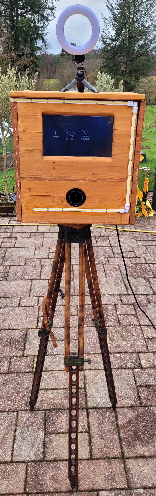
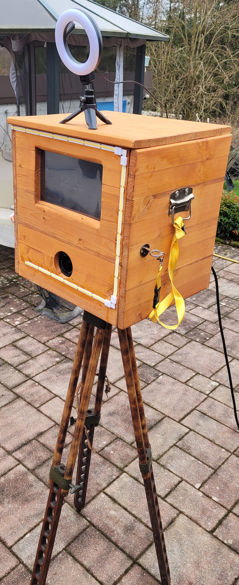
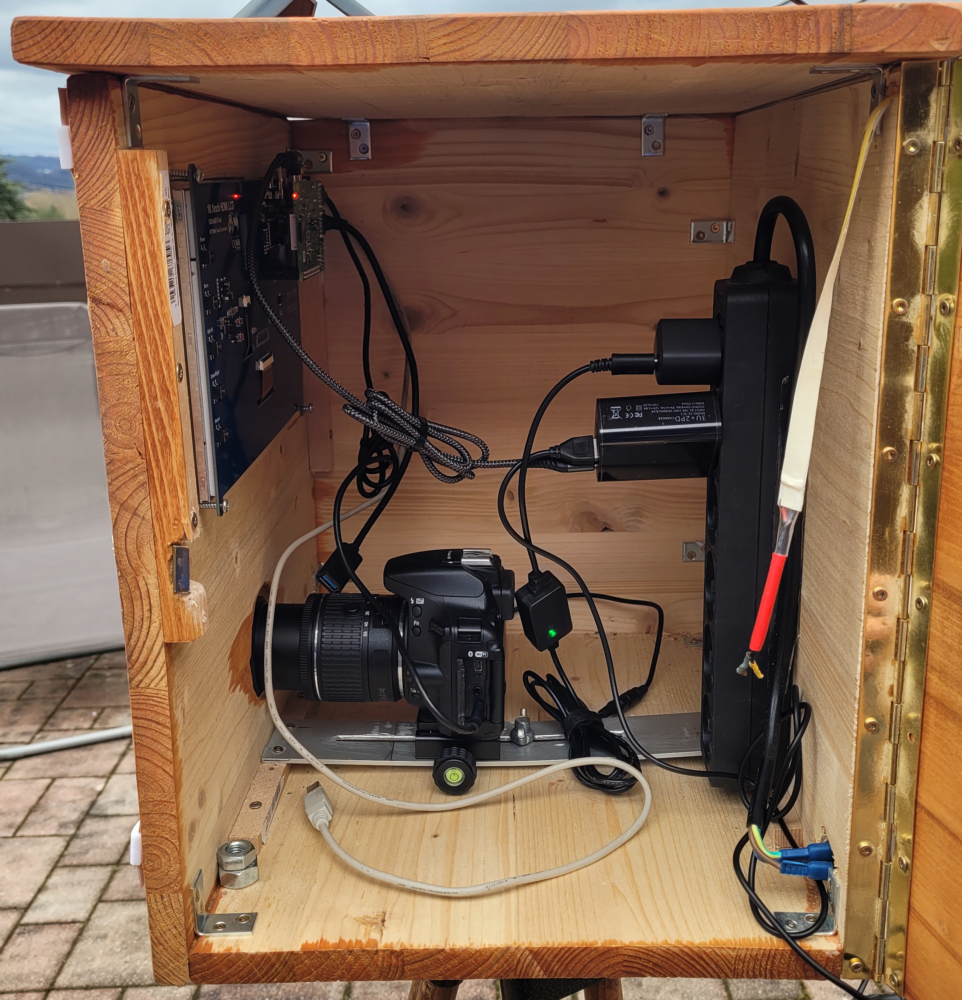

Photobooth
A self-built DSLR photo booth based on a Raspberry Pi, touchscreen, Python GUI and a DNP photo printer.
Overview
- Stack: Python, PyQt6, gphoto2, CUPS, Raspberry Pi, DSLR camera, Touchscreen, Bash
- Status: Work in Progress.
- Repo: GitHub
Notes
As a physics student with a strong interest in DIY electronics, software and practical tinkering, I built this photo booth as an alternative to commercial rental systems.
The system is built around a custom wooden enclosure, a Raspberry Pi, a touchscreen, a DSLR camera connected via USB, and an external DNP photo printer. Guests can use the touchscreen to take one, two or four pictures. The software then combines the photos with a selected template and sends the final image directly to the printer.
The current version runs entirely on the photo booth itself. Image capture, template composition, preview, print selection and printer statistics are handled locally on the Raspberry Pi.
The software supports:
- DSLR control via gphoto2
- a fullscreen touchscreen kiosk interface
- configurable templates for 1, 2 or 4 photos
- custom text fields for event names and dates
- local photo storage
- direct printing via CUPS
- basic print statistics
- keyboard shortcuts for setup and maintenance
Outlook
A future version could add optional network features such as live synchronization, a guest upload page, QR-code based sharing or a web gallery. Earlier prototypes experimented with server-side components, but for now the project focuses on a robust local client-side setup because that is simpler, easier to maintain, and more reliable during events.
To Do
- Improve robustness of camera capture after live preview.
- Add optional synchronization or web gallery features later.
- Build a new enclosure and remove unused legacy hardware.
Images
Front View
This is the front view of the photo booth. It features a custom-built
wooden enclosure with a camera (Nikon D5600) opening and a 10.1"
Waveshare LCD touchscreen display. An LED strip with an integrated
diffuser is mounted around the front and was originally used as a
flash. However, since the light was coming directly from the front, it
was reflected in eyeglass lenses, making the LED strips and their
geometric pattern clearly visible in the photos.
To solve this issue, I added a ring light on top of the box, which now
provides static illumination and results in much more natural
reflections.
The booth is mounted on a tripod with independently adjustable legs,
allowing the height and tilt to be adjusted easily. Internally, the
entire assembly is secured with a wing screw to ensure stable support.

Side View
At the rear, there is a standard IEC power connector that supplies the
photo booth with electricity.
On the side, a hinged door is integrated into the housing and secured
with a simple lock, allowing easy access for maintenance and
adjustments.

Inside View
The IEC power connector at the rear is connected to a six-outlet power
strip inside the enclosure. The camera is powered directly from this
strip, as battery operation would not be suitable for continuous use.
A 65W power adapter is also connected to the power strip. It supplies
both the ring light (which can draw up to 10W) and the Raspberry Pi 4
B+.
The Raspberry Pi is connected to the camera via USB. It is also
connected to the display via GPIO and HDMI, with the display receiving
its power directly through the GPIO connection from the Raspberry Pi.
Additionally, the Raspberry Pi is connected via a gray USB cable to a
DNP DS620 printer, which is provided separately and can also be
powered through the internal power strip.
For easier maintenance and debugging, a USB extension cable is
installed inside the enclosure. This allows a keyboard to be connected
externally without having to reach awkwardly into the box.
On the right side, you can see the end of the LED strip. It was
previously connected to a USB relay and used as a flash, but this
setup is no longer in use.
